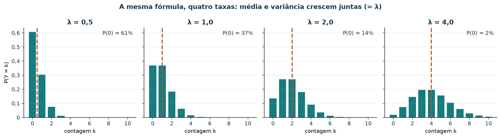
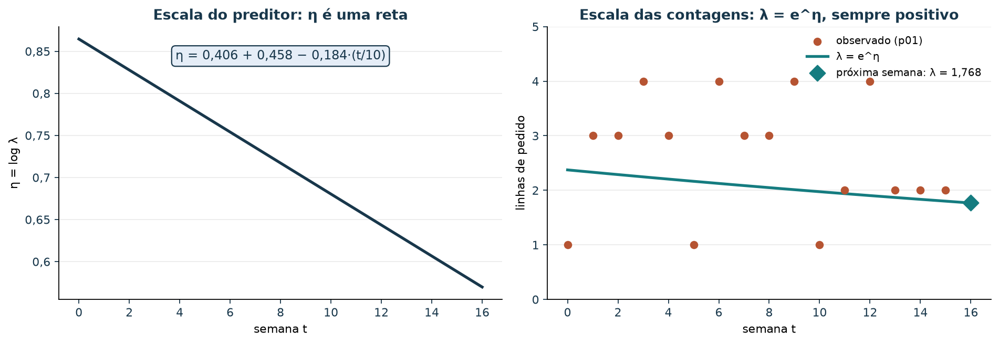
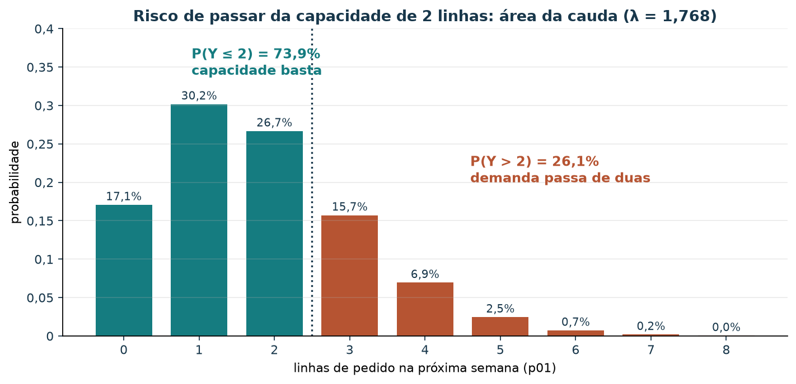
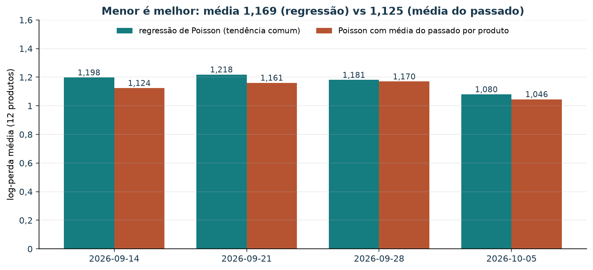
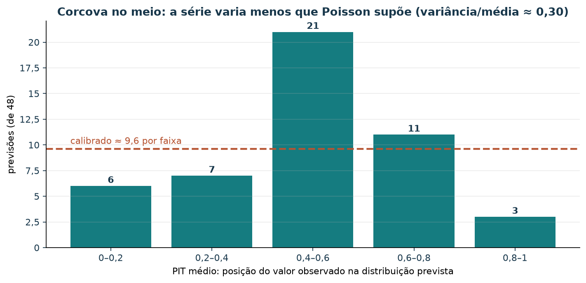
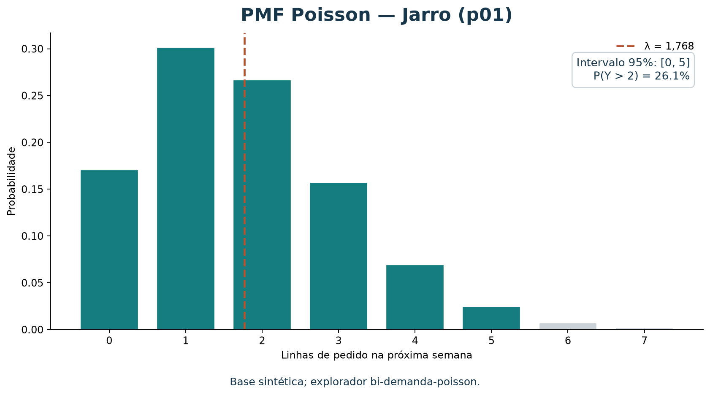

Previsão probabilística de demanda com regressão de Poisson
O tutorial de mínimos quadrados produz uma estimativa pontual: um único número de demanda esperada. Neste tutorial, ampliaremos a pergunta:
Quais contagens de vendas são plausíveis na próxima semana, e com que probabilidades?
Usaremos regressão de Poisson para prever uma taxa λ e a
distribuição de probabilidade das contagens inteiras. O exemplo depende
da série semanal sintética do marketplace e não representa transações
reais. É útil conhecer os conceitos de avaliação temporal da média
móvel e da regressão
por mínimos quadrados.
Roteiro
| Tempo sugerido | Atividade |
|---|---|
| 8 min | Diferenciar ponto estimado e distribuição |
| 10 min | Entender a distribuição de Poisson |
| 12 min | Ajustar regressão e calcular probabilidades |
| 12 min | Avaliar previsões e intervalos no tempo |
| 8 min | Interpretar risco, hipóteses e limitações |
1. Da estimativa pontual à distribuição
Uma previsão pontual, como “2,4 linhas na semana seguinte”, resume a demanda em um único valor esperado. Ela não informa se a contagem mais plausível é 2, se zero é comum ou se 5 ainda é possível.
Uma previsão probabilística atribui uma distribuição a resultados
possíveis. Neste tutorial, o alvo é uma contagem não negativa: linhas de
pedido por produto por semana. O modelo estima uma taxa esperada
λ; a distribuição de Poisson transforma essa taxa em
probabilidades para 0, 1, 2, ... linhas.
Inteligência artificial (IA) é o campo amplo de sistemas que podem aprender ou apoiar decisões; aprendizado de máquina (ML) inclui métodos que ajustam parâmetros a partir de exemplos. Regressão de Poisson é um modelo supervisionado para uma variável-alvo de contagem. A distribuição estimada acrescenta informação de incerteza à previsão, mas continua dependendo da qualidade dos dados e das hipóteses do modelo.
2. A distribuição de Poisson
Se Y é uma contagem com taxa esperada
λ > 0, sua probabilidade de assumir um valor inteiro
k ≥ 0 é:

Figura 1 — A mesma fórmula com quatro taxas. Para λ pequeno, o zero domina e a distribuição é assimétrica; para λ maior, ela se espalha e fica mais simétrica. A largura acompanha a média porque, em Poisson, a variância também vale λ.
Leia a figura da esquerda para a direita: uma peça que vende em média
meia linha por semana passa a maior parte das semanas sem venda,
enquanto uma peça com média 4 raramente zera. Quando você estima
λ, escolhe qual desses formatos descreve a próxima
semana.
Na distribuição de Poisson, a média e a variância são ambas
λ. Esse vínculo é uma hipótese importante, não uma verdade
sobre todo marketplace. Demanda com variância muito maior que a média
(sobredispersão), dependência temporal, excesso de zeros ou eventos
promocionais pode exigir outro modelo.
O modelo de regressão liga as características à taxa por meio de uma função logarítmica:
α_p representa um efeito por produto; t é o
índice semanal. O log garante que λ previsto permaneça
positivo. Neste exemplo, a regressão agrupa produtos, usa indicadores de
produto e compartilha uma tendência temporal. O ajuste regularizado
reduz a instabilidade, mas não cria informação que o histórico curto não
contém.
No ajuste da seção 3 com as 16 semanas, os coeficientes para o Jarro
(p01) são
,
e
por unidade de
.
Na escala do log, isso é uma reta; na escala das contagens, vira um
fator multiplicativo:
Cada semana multiplica a taxa por cerca de 0,982, uma queda de 1,8% por semana. Em , .

Figura 2 — A função de ligação log. O modelo é linear em η (esquerda) e multiplicativo em λ (direita). Por mais negativo que η fique, continua positivo, então nenhuma taxa prevista sai abaixo de zero.
3. Ajustar o modelo com scikit-learn
O arquivo dados/vendas_semanais.csv contém 16 semanas e
12 produtos. A soma de cada série coincide com o total
pedidos do catálogo, mas a distribuição temporal foi
construída para o exercício. Confira sua estrutura:
uv run python scripts/validar_vendas_semanais.pyO código abaixo usa pandas para preparar dados,
PoissonRegressor e OneHotEncoder do
scikit-learn, e poisson do SciPy para calcular
probabilidades. A partir da raiz, o pandas pode ser disponibilizado
com:
uv run --with pandas pythonfrom pathlib import Path
import numpy as np
import pandas as pd
from scipy.stats import poisson
from sklearn.compose import ColumnTransformer
from sklearn.linear_model import PoissonRegressor
from sklearn.pipeline import make_pipeline
from sklearn.preprocessing import OneHotEncoder
vendas = pd.read_csv(
Path("dados/vendas_semanais.csv"),
parse_dates=["week_start"],
)
vendas = vendas.sort_values(["week_start", "product_id"]).reset_index(drop=True)
semanas = sorted(vendas["week_start"].unique())
produtos = sorted(vendas["product_id"].unique())
vendas["week_index"] = (
vendas["week_start"].rank(method="dense").astype(int) - 1
) / 10
preprocessamento = ColumnTransformer(
[
(
"produto",
OneHotEncoder(categories=[produtos], handle_unknown="ignore"),
["product_id"],
),
("tempo", "passthrough", ["week_index"]),
]
)
modelo = make_pipeline(
preprocessamento,
PoissonRegressor(alpha=0.1, max_iter=1000),
)
modelo.fit(
vendas[["product_id", "week_index"]],
vendas["order_line_count"],
)alpha=0.1 define a regularização usada neste exemplo. O
índice de semana é dividido por 10 para manter a escala do preditor
temporal moderada; todas as previsões devem usar a mesma
transformação.
Distribuição prevista para o Jarro
Para prever a próxima semana após 16 observações, use índice 16/10 =
1,6 e calcule a distribuição de contagens para p01:
entrada = pd.DataFrame(
[{"product_id": "p01", "week_index": 16 / 10}]
)
taxa = float(modelo.predict(entrada)[0])
limite_inferior, limite_superior = poisson.ppf(
[0.025, 0.975],
taxa,
).astype(int)
probabilidades = poisson.pmf(np.arange(8), taxa)
probabilidade_mais_de_duas = poisson.sf(2, taxa)
print(f"Taxa esperada (lambda): {taxa:.3f}")
print(f"Intervalo preditivo central 95%: [{limite_inferior}, {limite_superior}]")
print(f"P(demanda > 2): {probabilidade_mais_de_duas:.1%}")
for contagem, probabilidade in enumerate(probabilidades):
print(f"P(demanda = {contagem}): {probabilidade:.1%}")
print(f"P(demanda >= 8): {poisson.sf(7, taxa):.1%}")Para os parâmetros e dados deste tutorial, obtemos aproximadamente:
λ = 1,768linhas de pedido esperadas.- Intervalo preditivo central de 95%: 0 a 5 linhas.
P(demanda > 2) ≈ 26,1%.
| Contagem | Probabilidade aproximada |
|---|---|
| 0 | 17,1% |
| 1 | 30,2% |
| 2 | 26,7% |
| 3 | 15,7% |
| 4 | 6,9% |
| 5 | 2,5% |
| 6 | 0,7% |
| 7 | 0,2% |
| 8 ou mais | <0,1% |

Figura 3 — A distribuição mostra vários resultados possíveis para uma previsão. O intervalo é condicional ao modelo de Poisson ajustado e não é uma garantia de que a demanda ficará dentro dos limites.
Por exemplo, se a loja decidir guardar duas linhas de pedido de cobertura, a probabilidade modelada de a demanda exceder esse nível é cerca de 26,1%. Isso não é automaticamente uma recomendação de estoque: uma decisão também depende de custos de falta e sobra, lead time, unidades por linha, capacidade de produção e outras informações não presentes neste conjunto.

Figura 4 — O risco de passar de duas linhas é a área da cauda à direita da linha pontilhada: . Mudar a capacidade move a linha; mudar o modelo muda a altura das barras.
4. Avaliar probabilidades em semanas futuras
Em cada ponto do teste, ajuste o modelo somente com semanas anteriores e produza uma previsão para cada produto da semana seguinte. Depois da previsão, compare a distribuição com a contagem observada. As quatro últimas semanas são o teste; os demais dados usados em cada origem são apenas o passado disponível.
Além do MAE da taxa prevista, examinaremos:
- Cobertura do intervalo de 95%: proporção de observações dentro do intervalo preditivo central calculado antes de observar a semana.
- Largura média: média de
limite superior − limite inferior. Intervalos mais estreitos são mais informativos, mas só se mantiverem cobertura adequada. - Log-verossimilhança negativa média: penaliza distribuições que dão pouca probabilidade aos valores realmente observados. Menor é melhor; não é uma percentagem nem está na escala de linhas de pedido.
inicio_teste = len(semanas) - 4
erros_pontuais = []
coberturas = []
larguras = []
log_perdas = []
for posicao in range(inicio_teste, len(semanas)):
treino = vendas[vendas["week_index"] < posicao / 10]
teste = vendas[vendas["week_index"] == posicao / 10].copy()
modelo_fold = make_pipeline(
ColumnTransformer(
[
(
"produto",
OneHotEncoder(categories=[produtos], handle_unknown="ignore"),
["product_id"],
),
("tempo", "passthrough", ["week_index"]),
]
),
PoissonRegressor(alpha=0.1, max_iter=1000),
)
modelo_fold.fit(
treino[["product_id", "week_index"]],
treino["order_line_count"],
)
teste["taxa"] = modelo_fold.predict(
teste[["product_id", "week_index"]]
)
observados = teste["order_line_count"].to_numpy()
taxas = teste["taxa"].to_numpy()
inferiores = poisson.ppf(0.025, taxas).astype(int)
superiores = poisson.ppf(0.975, taxas).astype(int)
erros_pontuais.extend(np.abs(observados - taxas))
coberturas.extend(
(observados >= inferiores) & (observados <= superiores)
)
larguras.extend(superiores - inferiores)
log_perdas.extend(-poisson.logpmf(observados, taxas))
print("Previsões:", len(erros_pontuais))
print(f"MAE da taxa: {np.mean(erros_pontuais):.3f}")
print(f"Cobertura dos intervalos: {np.mean(coberturas):.1%}")
print(f"Largura média dos intervalos: {np.mean(larguras):.3f}")
print(f"Log-perda média: {np.mean(log_perdas):.3f}")Saída reproduzida com a série deste exercício:
| Medida | Resultado |
|---|---|
| Previsões no teste | 48 |
| MAE da taxa esperada | 0,523 |
| Cobertura do intervalo central de 95% | 100% (48/48) |
| Largura média do intervalo discreto | 3,708 contagens |
| Log-perda média | 1,169 |
A cobertura de 100% parece alta, mas não prova boa calibração: são somente quatro semanas, os registros são sintéticos e os intervalos têm largura média de quase quatro contagens. Intervalos muito amplos podem cobrir observações sem oferecer informação útil. Avalie cobertura e largura em conjunto, idealmente em muitos períodos reais ainda não usados na modelagem.
Comparar com uma referência simples
Uma log-perda de 1,169 só ganha sentido ao lado de uma alternativa. A referência mais simples é uma Poisson sem regressão: para cada produto, use como a média das semanas anteriores à origem e pontue as mesmas 48 semanas de teste.

Figura 5 — Log-perda média dos 12 produtos em cada semana de teste. Menor é melhor. A referência sem tendência vence nas quatro semanas: média 1,125 contra 1,169 da regressão.
Nesta série, a tendência comum não ajuda a pontuar a semana seguinte. Isso não condena a regressão de Poisson em geral: mostra que, com 16 semanas sintéticas, um modelo mais rico precisa provar valor contra a referência antes de ir para o relato. O mesmo cuidado vale para qualquer métrica probabilística.
Calibração: onde caem as observações?
A cobertura de 100% com intervalos largos sugere distribuições mais espalhadas que os dados. O PIT (probability integral transform) mede isso observação por observação: onde o valor observado cai dentro da distribuição prevista. Para contagens, usa-se o PIT médio
Se as distribuições estiverem calibradas, os PITs se espalham por igual entre 0 e 1. Uma corcova no meio indica previsões espalhadas demais; um formato de U indica previsões estreitas demais.

Figura 6 — PIT das 48 previsões walk-forward. A corcova no meio mostra que os valores observados caem perto do centro das distribuições previstas com mais frequência do que deveriam.
A causa aparece nos próprios dados: em todos os 12 produtos, a variância semanal é menor que a média, com razão média de cerca de 0,30. Poisson supõe razão 1. A série varia menos do que o modelo admite (subdispersão), por isso os intervalos de 95% sobram e cobrem tudo. Com 48 previsões e dados sintéticos, leia o histograma como diagnóstico qualitativo, sem teste formal.
5. Como BI ajuda você a visualizar a distribuição
O explorador em bi-demanda-poisson/index.html
repete a conta deste tutorial para os doze produtos: mostra λ, a PMF, o
intervalo central de 95% e a cobertura no walk-forward das quatro
últimas semanas. Use-o para conferir o exercício do Jarro e para
comparar produtos sem reexecutar o notebook à mão.
Experimente a distribuição neste tutorial
Escolha o produto e leia a PMF, o intervalo de 95% e a cobertura no teste. As 16 semanas são sintéticas.

Figura 7 — A mesma distribuição da Figura 3, desenhada pelo explorador. No painel, troque o produto para comparar formatos de distribuição e coberturas.
Para regenerar dados e figura:
uv run python scripts/gerar_bi_demanda_poisson.pyA versão web incorpora o explorador quando o site estiver atualizado.
6. Interpretar com cuidado
λé a média condicional prevista pelo modelo; não significa que esse número de linhas ocorrerá exatamente.- O intervalo preditivo representa incerteza de contagem sob as hipóteses do modelo. Ele não incorpora automaticamente toda incerteza sobre parâmetros, mudança de mercado, ruptura de estoque ou qualidade dos dados.
- Poisson supõe média igual à variância e contagens condicionalmente independentes. Se os dados reais forem sobredispersos ou tiverem padrão de zeros diferente, a distribuição poderá subestimar ou distorcer o risco. Nesta série ocorre o inverso: a variância é menor que a média (Figura 6), e o modelo superestima a incerteza.
- A regressão aqui usa indicadores de produto e uma inclinação temporal comum. Com apenas 16 semanas artificiais, não há base para estimar sazonalidade anual, feriados ou efeitos promocionais.
- “Probabilidade de exceder duas linhas” só vira decisão de estoque depois que custo, capacidade, lead time e significado de uma linha forem definidos.
7. Exercício: risco para estoque de dois
Use p01 e o modelo acima. Calcule
P(Y > 2) e P(Y ≤ 2) para a próxima semana.
Se a loja reservar capacidade para duas linhas, escreva uma frase
explicando o risco conforme o modelo e duas informações de negócio que
ainda seriam necessárias antes de decidir a quantidade física a
produzir.
Resolução comentada
Para λ ≈ 1,768, P(Y > 2) ≈ 0,261 e
P(Y ≤ 2) ≈ 0,739. Portanto, segundo essa distribuição
estimada, há cerca de 26% de chance de a contagem passar de duas linhas
na semana. Isso não implica 26% de chance de faltar duas unidades: uma
linha pode conter quantidades diferentes. A decisão também requer, por
exemplo, unidades em cada linha, custos de excesso e falta, estoque
disponível e prazo de reposição.
Para ir além: a referência e a calibração
Responda em três frases: (a) qual modelo teve menor log-perda nas semanas de teste, a regressão ou a Poisson com a média do passado (Figura 5)? (b) O que a corcova do PIT (Figura 6) diz sobre os intervalos de 95%? (c) Por que a cobertura de 100% não basta para chamar o modelo de bem calibrado?
Resolução comentada. (a) A referência: 1,125 contra 1,169, e vence nas quatro semanas. (b) Os valores observados caem no centro das distribuições com frequência excessiva (21 de 48 na faixa 0,4–0,6, contra 9,6 esperados): as distribuições estão espalhadas demais, e os intervalos ficam largos. (c) Intervalos largos demais cobrem quase tudo; calibração exige que as observações se distribuam como a previsão diz, inclusive nas caudas. A razão variância/média de cerca de 0,30 explica o excesso de largura.
Referências
- SCIKIT-LEARN.
PoissonRegressor: modelo generalizado de regressão de Poisson. Documentação. - SCI-PY.
scipy.stats.poisson: função de massa de probabilidade, quantis e funções de sobrevivência para a distribuição de Poisson. Documentação. - CZADO, Claudia; GNEITING, Tilmann; HELD, Leonhard. Predictive model assessment for count data. Biometrics, v. 65, n. 4, p. 1254–1261, 2009. DOI: 10.1111/j.1541-0420.2009.01191.x. Para aprofundar: PIT para contagens e diagnóstico de calibração.
- GNEITING, Tilmann; RAFTERY, Adrian E. Strictly proper scoring rules, prediction, and estimation. Journal of the American Statistical Association, v. 102, n. 477, p. 359–378, 2007. DOI: 10.1198/016214506000001437. Para aprofundar: por que a log-perda recompensa previsões honestas.
- CAMERON, A. Colin; TRIVEDI, Pravin K. Regression analysis of count data. 2. ed. Cambridge: Cambridge University Press, 2013. Para aprofundar: sobredispersão, subdispersão e alternativas à Poisson.
A distribuição do Jarro (Figura 3) pode ser recriada a partir da raiz do repositório:
uv run --with scikit-learn python scripts/gerar_figuras_demanda.pyAs Figuras 1, 2, 4, 5 e 6 vêm de um script que repete o mesmo ajuste:
uv run python scripts/gerar_figuras_poisson.py